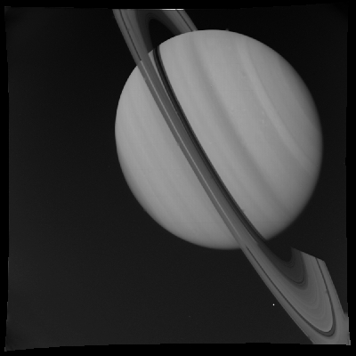

override_example-batch.pro
batch fileOVERRIDE EXAMPLE
Created by Joe Spitale
This example demonstrates the use of OMINAS with no translators. All geometric values are manually entered. I don't know why you would want to do this, but it's a useful way to test OMINAS without needing any translator packages installed.
This example file can be executed from the UNIX command line using:
or from within IDL using:
After the example stops, later code samples in this file may be executed by pasting them at the IDL command prompt. READ AND DISPLAY IMAGE

DAT_READ is OMINAS' program for reading data files. It figures out file readers, sorts out translators (or lack thereof), etc. It returns a data descriptor (dd) -- an object containing the data array and a whole bunch of other stuff, most of which you'll probably never use:
dd = dat_read('./data/c3440346.gem', im, label)
tvim, im, zoom=0.5, /order, /new
OBTAIN GEOMETRY
Here we obtain the objects that describe the geometry of the data set contained in the data descriptor. The camera descriptor (cd) contains the camera position, orientation, and relevant constant parameters. The other objects -- planet descriptor (pd) and ring descriptor (rd) -- describe the states of those bodies, as seen from the camera at the time of the observation. /OVERRIDE tells the PG_GET_* programs not to call the translators. Instead all values are entered manually, like in the good old days.
Camera descriptor:
cd = pg_get_cameras(dd, /override, $
name='VGR1_ISS_NA', $
orient= $
[ [-0.177287575, -0.966450211, -0.185857758 ], $
[ 0.507898045, -0.251604865, 0.823853487 ], $
[ 0.842976092, -0.051662194, -0.535464589 ] ], $
avel=tr([0.0, 0.0, 0.0]), $
pos=tr([0.0, 0.0, 0.0]), $
vel=tr([0.0, 0.0, 0.0]), $
time=972603249.d, $
scale=[7.858656e-06,7.858656e-06], $
oaxis=[499.0,499.0], $
size=[1000,1000], $
fn_focal_to_image='cam_focal_to_image_linear', $
fn_image_to_focal='cam_image_to_focal_linear', $
fi_data=ptr_new() $
)
pd = pg_get_planets(dd, od=cd, /override, $
name='SATURN', $
orient= $
[ [-0.254669368, 0.963251789, 0.085378596], $
[-0.962535206, -0.260997177, 0.073528563], $
[ 0.093110093, -0.063454432, 0.993631746] ], $
avel=tr([0.0854, 0.0732, 0.9937])*1.74e-4, $
pos=tr([-23433172000.0, -6105736000.0, -1223129375.0]), $
vel=[ tr([9500.0, 0.0, 0.0]), $
tr([0.0, 0.1, 0.0]) ], $
time=972603249.d, $
radii=[60268000.,60268000.,54364000.], $
lora=0.0 $
)
rd = pg_get_rings(dd, pd=pd, od=cd, /override, $
name='MAIN_RING_SYSTEM', $
gd={bx0:pd}, $
orient= $
[ [-0.254669368, 0.963251789, 0.085378596], $
[-0.962535206, -0.260997177, 0.073528563], $
[ 0.093110093, -0.063454432, 0.993631746] ], $
avel=tr([0.0854, 0.0732, 0.9937])*1.74e-4, $
pos=tr([-23433172000.0, -6105736000.0, -1223129375.0]), $
vel=[tr([9500.0, 0.0, 0.0]), $
tr([0.0, 0.1, 0.0]) ] , $
time=972603249.d, $
sma=tr([75000000.0,136800000.0]), $
ecc=tr([0.0, 0.0]) $
)
ltd = pg_get_stars(dd, od=cd, /override, $
name='SUN', $
pos=tr([1.421392d12,4.3105676d10,-4.3613585d10]) $
)
MAKE A GENERIC DESCRIPTOR
At this level, a generic descriptor is just a convenient shorthand to keep all of your object descriptors together. All PG programs accept individual descriptor as well as generic descriptors as arguments. GBX means any subclass of GLOBE, DKX means any SUBCLASS of DSK. These are arguments to the PG programs that we'll be working with:
gd = {cd:cd, gbx:pd, dkx:rd, ltd:ltd}
1) I never use them like this.
2) They are nevertheless a handy way to keep the full geometry of a scene in one place, and they're used all over the place way down in the core.
COMPUTE OVERLAY ARRAYS
Here we compute various overlays using some PG programs. The overlay arrays are contained in POINT objects; limb_ptd, ring_ptd, etc. Note that the generic descriptor does not always contain enough information to get the job done. PG_CENTER requires an explicit bx (arbitrary body) argument to tell it which of the bodies in gd are intended. PG_HIDE hide the given points with respect to whatever bodies you give it:
limb_ptd = pg_limb(gd=gd, count=nlimb) & pg_hide, limb_ptd, gd=gd
ring_ptd = pg_disk(gd=gd, count=nring) & pg_hide, ring_ptd, gd=gd
shadow_ptd = pg_shadow_globe(gd=gd, ring_ptd)
center_ptd = pg_center(gd=gd, bx=pd)
PUT THE OVERLAYS IN ONE ARRAY
I seriously never do things this way, but I guess it illustrates various ways to use the software. We're putting all of the POINT objects into one array, and making corresponding arrays for the colors, plotting symbols, etc.
The CT programs are used to get color indices for some basic colors without having to know what type of visual class you're using:
object_ptd = [center_ptd,limb_ptd,ring_ptd,shadow_ptd]
colors = [!p.color,ctyellow(),ctred(),ctred(),ctblue()]
psyms=[1,3,3,3,3]
psizes=[0.5]
plabels = [cor_name(pd), '', '']
DRAW EVERYTHING

PG_DRAW is the basic program for drawing overlays in OMINAS. It does the same thing as PLOTS (which you could use instead), but it accepts POINT objects are arguments and allows you to use specify multiple colors symbols, etc. PG_DRAW also accepts raw points arrays (i.e. 2 x np):
pg_draw, object_ptd, $
colors=colors, psyms=psyms, psizes=psizes, plabel=plabels
MAKE IT OFFICIAL BY ADDING GRIDS
PG_GRID will put a grid on just about anything. At least anything with a surface described by two angle-like coordinates: a planet, a map, the sky, a disk (in that case, the radius is one of the coordinates), etc. Those kinds of coordinate systems are referred to as surface coordinate systems in OMINAS. Because their representations are analogous, their corresponding objects can be pretty much interchanged all over the place. This is such a place. On that topic, coordinate systems using image points (i.e., CAMERA and MAP image systems) are similarly interchangeable:
grid_ptd = pg_grid(gd=gd, bx=pd)
pg_hide, grid_ptd, gd=gd, bx=pd, /assoc
pg_hide, grid_ptd, gd=gd, bx=rd
pg_draw, grid_ptd, color=ctblue()
dgrid_ptd = pg_grid(gd=gd, bx=rd) & pg_hide, dgrid_ptd, gd=gd, bx=pd
pg_draw, dgrid_ptd, color=ctpurple()
DEFINE A RING SECTOR
Let's define a sector so we can make a plot of intensity vs. radius or longitude. First, we'll specify the longitude and radius limits explicitly. Note that we're working in meters here because all of our inputs for the descriptors were in meters. Units in OMINAS are determined by the translators. Of course, all angles are in radians:
lon = [175,177] * !dpi/180d
rad = [65000,138000] * 1000d
tvim,im
outline_ptd = pg_ring_sector(gd=gd, rad=rad, lon=lon)
pg_draw, outline_ptd, col=ctgreen()
MANUALLY DEFINE A RING SECTOR
You can also define the ring sector using the mouse. Just leave out the bounds in the call to PG_RING_SECTOR. Have we fixed that thing where the sector wraps around wrong? You'd think so by now:
tvim,im
outline_ptd = pg_ring_sector(gd=gd)
pg_draw, outline_ptd, col=ctgreen()
.. image:: graphics/saturn_sector_1.jpeg
PLOT INTENSITY VS. RADIUS AND LONGITUDE
The POINT object returned by PG_RING_SECTOR can be used as an input to PG_PROFILE_RING to produce radial and azimuthal profiles. PG_PROFILE_RING returns a data descriptor containing the plot. It also outputs the profile itself and the disk coordinates of each point in the profile so you don't have to dereference the data descriptor.
Radial scan:
dd_prof = pg_profile_ring(dd, gd=gd, outline_ptd, $
dsk_pts=dsk_pts, profile=profile)
window, /free, xs=500, ys=300
plot, dsk_pts[*,0], profile
.. image:: graphics/saturn_sector_2.jpeg
dd_prof = pg_profile_ring(dd, gd=gd, outline_ptd, /azimuthal, $
dsk_pts=dsk_pts, profile=profile)
window, /free, xs=500, ys=300
plot, dsk_pts[*,1], profile, /yno
.. image:: graphics/saturn_sector_3.jpeg
File attributes
| Modification date: | Mon Aug 14 16:37:49 2017 |
| Lines: | 87 |
| Docformat: | rst rst |